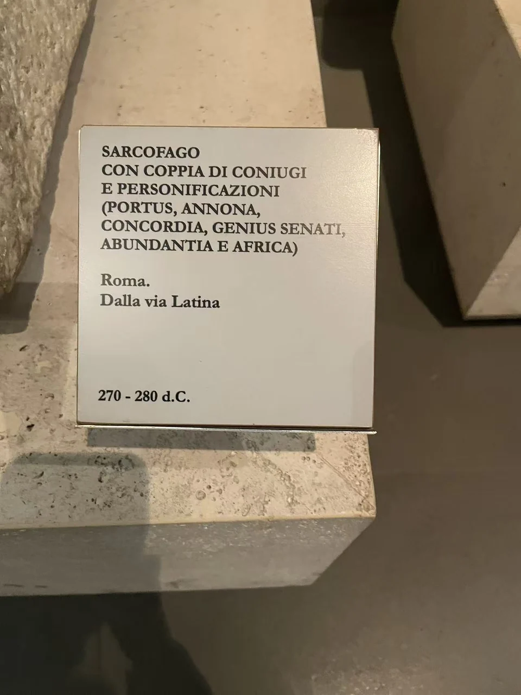

ROMAN SARCOPHAGI / R08
安诺纳石棺（夫妇与粮食供给等人格化形象）
握手的夫妻在中央相遇，周围人格化形象把婚姻连向更广阔的公共生活。

- 年代
- 270–280年
- 收藏
- 罗马国家博物馆
- 观看地点
- 罗马国家博物馆·马西莫宫 · 罗马
- 馆藏号
- 40799
- 发现地记录
- 罗马拉丁大道（现场展牌）
一个手势的中心
中央男女以相握的右手建立联系，两旁人物的身体与持物沿石面展开。现场展牌将他们识为夫妇，并列出港口、粮食供给、和谐、丰饶等人格化形象。手势让家庭关系成为画面的轴线，周围人物则使纪念超出一张简单的夫妻肖像。
石面曾经有颜色
安诺纳石棺也是古代彩绘与贴金研究的案例。Eliana Siotto等人的2015年研究摘要说明，团队在这件40799号石棺上结合多光谱成像、材料分析与三维记录，研究残存颜色及金层。今日浅色石面和阴影形成的效果，不能涵盖它原有的全部表情。 [11]
现场展签 · 1张
